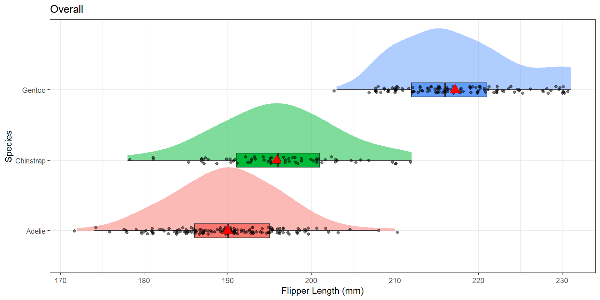
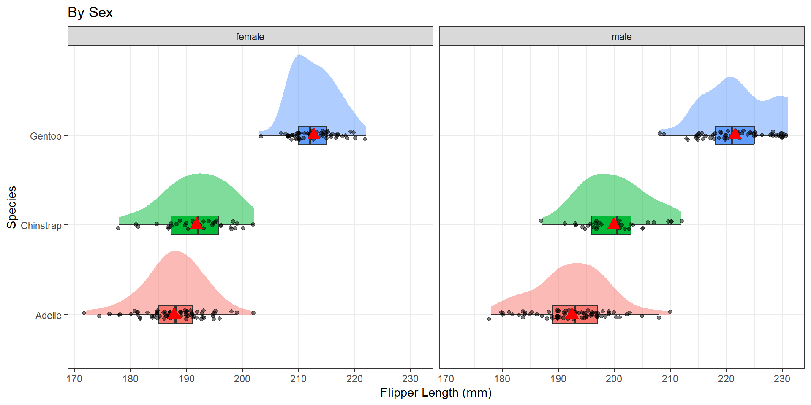
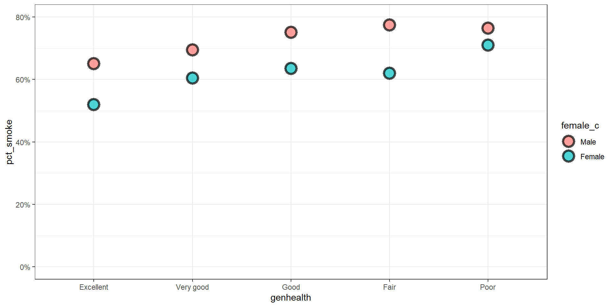

Moderation and Stratification
2025-10-29
Setup
Motivation - Ex. 1
Below are the admissions figures for Fall 1973 at UC Berkeley.
| Applicants | Admitted | |
|---|---|---|
| Total | 12,763 | 41% |
| Men | 8,442 | 44% |
| Women | 4,321 | 35% |
Is there evidence of gender bias in college admissions? Do you think a difference of 35% vs 44% is too large to be by chance?
Department specific data
| All | Men | Women | ||||
| Department | Applicants | Admitted | Applicants | Admitted | Applicants | Admitted |
| A | 933 | 64% | 825 | 62% | 108 | 82% |
| B | 585 | 63% | 560 | 63% | 25 | 68% |
| C | 918 | 35% | 325 | 37% | 593 | 34% |
| D | 792 | 34% | 417 | 33% | 375 | 35% |
| E | 584 | 25% | 191 | 28% | 393 | 24% |
| F | 714 | 6% | 373 | 6% | 341 | 7% |
| Total | 4526 | 39% | 2691 | 45% | 1835 | 30% |
After adjusting for features such as size and competitiveness of the department, the pooled data showed a “small but statistically significant bias in favor of women”
Motivation Ex. 2
Can we predict penguin body mass from the flipper length?
Moderation
Moderation occurs when the relationship between two variables depends on a third variable.
- The third variable is referred to as the moderating variable or simply the moderator.
- The moderator affects the direction and/or strength of the relationship between the explanatory (\(x\)) and response (\(y\)) variable.
- So we need a model that can allow for this difference in slope.

Stratification
Stratified models fit the regression equations (or any other bivariate analysis) for each subgroup of the population.
The mathematical model describing the relationship between body mass (\(Y\)), and flipper length (\(X\)) for each of the species separately would be written as follows:
\[ Y_{ib} \sim \beta_{0b} + \beta_{1b}*x_{i} + \epsilon_{ib} \qquad \epsilon_{ib} \sim \mathcal{N}(0,\sigma^{2}_{b})\] \[ Y_{id} \sim \beta_{0d} + \beta_{1d}*x_{i} + \epsilon_{id} \qquad \epsilon_{id} \sim \mathcal{N}(0,\sigma^{2}_{c}) \] \[ Y_{it} \sim \beta_{0t} + \beta_{1t}*x_{i} + \epsilon_{it} \qquad \epsilon_{it} \sim \mathcal{N}(0,\sigma^{2}_{t}) \]
where \(b, d, t\) indicates islands Biscoe, Dream and Torgersen respectively.
Stratification
Benefits
- In each model, the intercept, slope, and variance of the residuals can all be different.
- \(Y_{ij} \sim \beta_{0j} + \beta_{1j}*x_{i} + \epsilon_{ij} \qquad \epsilon_{ij} \sim \mathcal{N}(0,\sigma^{2}_{j})\)
- This is the unique and powerful feature of stratified models.
Consequences
- Each model is only fit on the amount of data in that particular subset.
- Each model has 3 parameters that need to be estimated: \(\beta_{0}, \beta_{1}\), and \(\sigma^{2}\)
- Total of 9 for the three models.
- The more parameters that need to be estimated, the more data we need.
Identifying a Moderator
When testing a potential moderator, we are asking the question whether there is an association between two constructs, but separately for different subgroups within the sample.
We consider 3 scenarios demonstrating how a third variable can modify the relationship between the original two variables.
Significant –> Non-Significant
- Significant relationship at bivariate level
- We expect the effect to exist in the entire population
- Within at least one level of the third variable the strength of the relationship changes
- P-value is no longer significant within at least one subgroup
Non-Significant –> Significant
- Non-significant relationship at bivariate level
- We do not expect the effect to exist in the entire population
- Within at least one level of the third variable the relationship becomes significant
- P-value is now significant within at least one subgroup
Change in Direction of Association
- Significant relationship at bivariate level
- We expect the effect to exist in the entire population
- Within at least one level of the third variable the direction of the relationship changes
- Means change order, positive to negative correlation etc.
What to look for
| ANOVA | Chi-Square | Regression |
|---|---|---|
| \(p\)-value, \(R^2\), means, density/boxplot | \(p\)-value, col percents, side by side barcharts | correlation coefficient (\(r\)), \(p\)-value, \(\beta\) coefficients, \(r\)-squared, scatterplot |
Compare these values within each level of the potential moderator to the values in the overall model.
Example: ANOVA
Does sex modify the relationship between flipper length and species?
Show the code
ggplot(pen, aes(x=flipper_length_mm, y=species, fill=species)) +
stat_slab(alpha=.5, justification = 0) +
geom_boxplot(width = .2, outlier.shape = NA) +
geom_jitter(alpha = 0.5, height = 0.05) +
stat_summary(fun="mean", geom="point", col="red", size=4, pch=17) +
theme_bw() +
labs(x="Flipper Length (mm)", y = "Species", title = "Overall") +
theme(legend.position = "none")
Gentoo have the larger flipper length by far, then Chinstrap is similar to Adelie but a little larger.
Show the code
pen %>% select(flipper_length_mm, species, sex) %>% na.omit() %>%
ggplot(aes(x=flipper_length_mm, y=species, fill=species)) +
stat_slab(alpha=.5, justification = 0) +
geom_boxplot(width = .2, outlier.shape = NA) +
geom_jitter(alpha = 0.5, height = 0.05) +
stat_summary(fun="mean", geom="point", col="red", size=4, pch=17) +
theme_bw() +
labs(x="Flipper Length (mm)", y = "Species", title = "By Sex") +
theme(legend.position = "none") +
facet_wrap(~sex)
The pattern of distributions of flipper length by species seems the same for both sexes of penguin. Sex is likely not a moderator.
Example: ANOVA (cont.)
Df Sum Sq Mean Sq F value Pr(>F)
pen$species 2 52473 26237 594.8 <2e-16 ***
Residuals 339 14953 44
---
Signif. codes: 0 '***' 0.001 '**' 0.01 '*' 0.05 '.' 0.1 ' ' 1
2 observations deleted due to missingness# R2 for Anova Regression
R2: 0.778
adj. R2: 0.777Highly significant p-value, \(R^2\) value of 0.77
Show the code
pen$sex: female
[[1]]
Df Sum Sq Mean Sq F value Pr(>F)
x$species 2 21415.6 10708 411.79 < 2.2e-16 ***
Residuals 162 4212.6 26
---
Signif. codes: 0 '***' 0.001 '**' 0.01 '*' 0.05 '.' 0.1 ' ' 1
$R2
R2
0.8356281
$R2_adjusted
adjusted R2
0.8335988
------------------------------------------------------------------------------------------------------------------------------------------------------
pen$sex: male
[[1]]
Df Sum Sq Mean Sq F value Pr(>F)
x$species 2 29098.4 14549.2 384.37 < 2.2e-16 ***
Residuals 165 6245.6 37.9
---
Signif. codes: 0 '***' 0.001 '**' 0.01 '*' 0.05 '.' 0.1 ' ' 1
$R2
R2
0.8232924
$R2_adjusted
adjusted R2
0.8211504 P-value still <.0001 in each group, \(R^2_{f}= 0.84, R^2_m = 0.82\). Same pattern.
Sex is not a modifier, the relationship between species and flipper length is the same within male and female penguins.
Example: Chi-Squared
Does gender modify the relationship between smoking and general health?
Show the code
addhealth %>%
select(female_c, genhealth, eversmoke_c) %>% na.omit() %>%
group_by(female_c, genhealth) %>%
summarize(pct_smoke = mean(eversmoke_c == "Smoked at least once")) %>%
ggplot(aes(x=genhealth, y = pct_smoke, fill = female_c)) +
geom_point(size=5, alpha=0.7, shape=21, stroke=2) +
scale_y_continuous(limits = c(0, .8), labels = percent) +
theme_bw()
Mostly similar pattern within males and females
Example: Chi-Squared (cont)
addhealth$female_c: Male
Pearson's Chi-squared test
data: x$eversmoke_c and x$genhealth
X-squared = 19.455, df = 4, p-value = 0.0006395
------------------------------------------------------------------------------------------------------------------------------------------------------
addhealth$female_c: Female
Pearson's Chi-squared test
data: x$eversmoke_c and x$genhealth
X-squared = 19.998, df = 4, p-value = 0.0004998P-value still <.0001 in each group
The relationship between smoking status and general health is significant in both the main effects and the stratified model. The distribution of smoking status across general health categories does not differ between females and males. Gender is not a moderator for this analysis.
Example: Regression
Example: Regression (cont.)
[1] 0.8717538iris$Species: setosa
[1] 0.2671758
------------------------------------------------------------------------------------------------------------------------------------------------------
iris$Species: versicolor
[1] 0.754049
------------------------------------------------------------------------------------------------------------------------------------------------------
iris$Species: virginica
[1] 0.8642247\(r\) for virginica (.86) and veriscolor (.75) are similar to the overall correlation value (.87), but \(r\) for setosa (.27) is much smaller.
Show the code
iris$Species: setosa
# A tibble: 2 × 5
term estimate std.error statistic p.value
<chr> <dbl> <dbl> <dbl> <dbl>
1 (Intercept) 0.803 0.344 2.34 0.0238
2 x$Sepal.Length 0.132 0.0685 1.92 0.0607
------------------------------------------------------------------------------------------------------------------------------------------------------
iris$Species: versicolor
# A tibble: 2 × 5
term estimate std.error statistic p.value
<chr> <dbl> <dbl> <dbl> <dbl>
1 (Intercept) 0.185 0.514 0.360 7.20e- 1
2 x$Sepal.Length 0.686 0.0863 7.95 2.59e-10
------------------------------------------------------------------------------------------------------------------------------------------------------
iris$Species: virginica
# A tibble: 2 × 5
term estimate std.error statistic p.value
<chr> <dbl> <dbl> <dbl> <dbl>
1 (Intercept) 0.610 0.417 1.46 1.50e- 1
2 x$Sepal.Length 0.750 0.0630 11.9 6.30e-16- Overall: \(-7.1 + 1.86x\), p<.0001
- Setosa: \(0.08 + 0.13x\), p=.06
- Versicolor: \(0.19 + 0.69x\), p<.0001
- Virginica: \(0.61 + 0.75x\), p<.0001
Iris specis moderates the relationship between sepal and petal length.